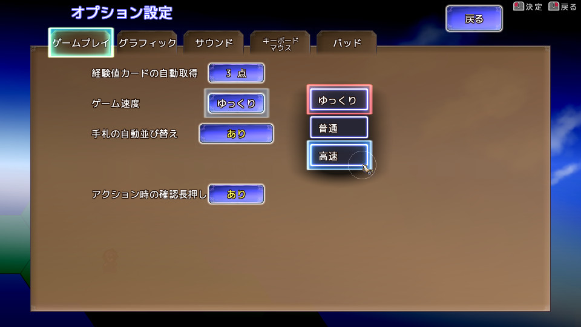

■2019-06-22 (土) 片道勇者2【38】 オプション画面▼
今週も空いた時間で開発を進めていました。
今週は調子が悪かったのもありますが、
「オプション画面を作る」という一言の作業項目に
ここだけでやたらと時間がかかってしまいました。
【オプション画面を作成！】

ということで、アルファ1では会話選択肢でごまかしていた
オプション画面の正式版のベースを作成しました！
オプション画面は作ってもすぐゲーム性が拡張されるわけでもなく、
それなのに手間だけは他の画面追加と同じだけかかるので、
開発者視点だと心理的にすごく面倒くさい部分です。
ここまで先延ばしにしてしまっておっくうな気持ちになってましたが、
なんとか動くところまで作れたので一安心です。
他は作っていくほどゲームが広がる内容が多いので、
このオプション画面を今作ってしまえば、
残りのほとんどのシステム作成は
割と楽しみながら作れると思います、たぶん。
あっ、でもメッセージログ画面があった！
これもあまり楽しくない割に面倒くさそうな部分です。
キーボード操作だけなら楽なんですが、マウス操作対応が面倒くさい部分なんですよ。
勢いを付けてがんばっていきたいと思います。
【これからは？】
まだまだ細かい調整やバグ修正はたくさん残っていますが、
徐々に新機能の搭載にも移っています。
ここからは「仲間とどこでも会話できる機能」や、
「1ヘクスに複数キャラを載せる処理」「近くの施設が分かる機能」など、
ゲームが変わる新機能追加もおこなっていく予定です。
あと、別件と副業で創作系の話が裏で進んでいます。
片方はあと数ヶ月ほどで何らかのお知らせができるところまで
来ている感じなので、もう少々お待ちいただければ幸いです。
2019-06-22 (土)  カテゴリ: 片道勇者2
カテゴリ: 片道勇者2
 カテゴリ: 片道勇者2
カテゴリ: 片道勇者2